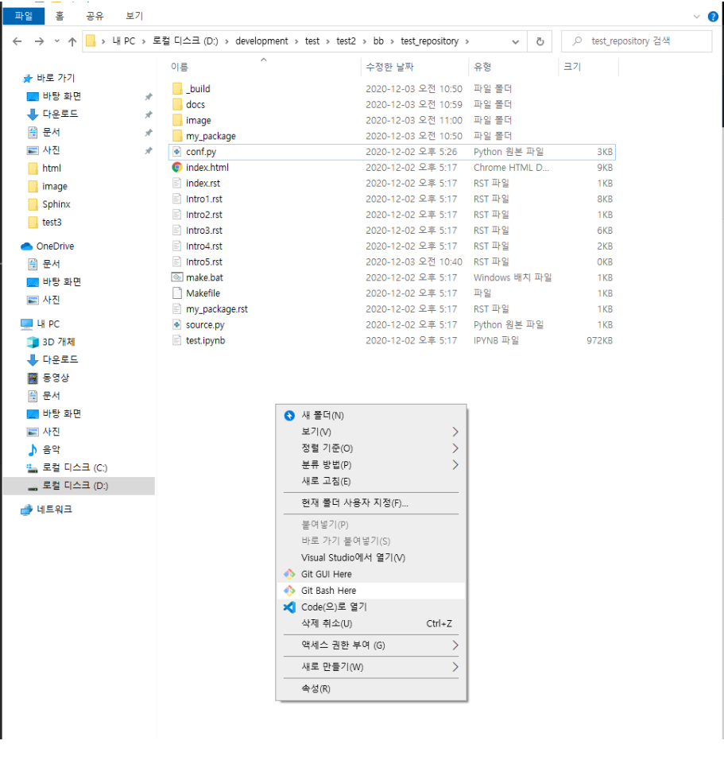

6. 깃허브 페이지로 등록(무료 호스팅?)¶
먼저 깃허브에 새로운 Repository를 만든다.¶
생성 완료¶

make 가 있는 root 경로에 docs폴더를 생성.¶
root/_build/html 에 생성된 모든 파일을 docs폴더에 복사¶
docs 폴더에 .nojekyll 빈파일 생성.¶
참고
github page는 jekyll 테마마를 기본으로 하여 제공한다. 우리는 Sphinx를 이용하니 jekeyll을 사용하지 않는다고 명시해주는 방법으로 .nojekyll 의 파일명을 가진 빈파일을 생성해준다.
git bash 실행.¶
## 아래 명령어를 차례대로 실행한다.
#README.md 파일 생성.(없어도 실행에 지장은 없으나 파일에 대한 기본설명을 기입. 최소한의 예의 )
echo "# test_repository" >> README.md
## .git 의 하위 디렉토리를 만듬. 저장소에 뼈대(Skeleton)이 들어있음.
git init
# 저장소에 파일 추가. 정상 실행되는지 README 파일을 가지고 테스트.
git add README.md
# 추가 변경사항을 저장소에 기록
# commit -m 옵션을 입력하여 어떤이유로 무엇이 변경되었는지
# commit 에 대한 기록을 남긴다.
git commit -m "first commit"
# branch란 말그대로 가지치기.
# 다른 버전, 독립된 작업 영억을 만들어 원본에 영향을 주지않고 개발, 변경가능
# 또한 원래의 버전과 비교하여 merge 할 수 있음
# -M 옵션은 branch 의 이름을 의미.
git branch -M main
# 내 repository에 연결 아래 주소는 자신의 repository 주소로 변경한다.
git remote add origin **https://github.com/ziwon-seo/test_repository.git
# 위에 연결한 repository에 main branch에 push (업로드 한다.)
git push -u origin main
정상적으로 push가 되었다면 Settings버튼을 클릭¶
하단에 GitHub Pages 에 Source > None을 클릭¶
위에서 생성한 main 브런치를 클릭 하고 save를 클릭¶
root 를 docs로 변경 그리고 save 클릭¶
docs에 생성된 index.html페이지로 연결하기 위해서.